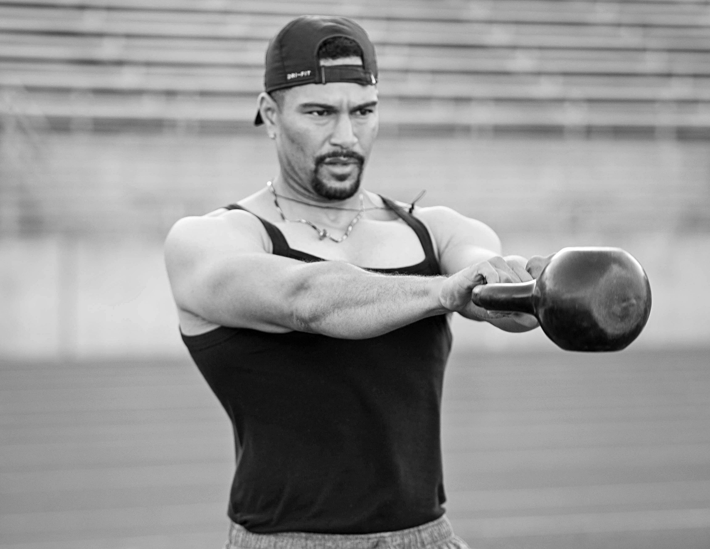

Robert Harrison.
Creating who I needed when I was a teenager.

Robert Harrison founded Defying the Odds Fitness with a deeply personal mission: to become the type of mentor, coach, and trusted adult he needed growing up.
Growing up around community violence, Robert saw firsthand how quickly a young person’s life could change. A defining moment came after seeing a close friend survive being shot six times. That experience strengthened his belief that young people need more than intervention after something goes wrong—they need positive relationships, structure, mentorship, healthy outlets, and adults who believe in them early.
Robert turned that belief into action.
Since founding Defying the Odds Fitness in 2017, he has built experience across youth development, education, behavioral health, violence prevention, and justice-involved services. His work has included mentoring justice-impacted youth through The Mentoring Center, supporting students and families within Oakland Unified School District, providing school-based counseling through the Alameda County Office of Education, and serving as a Clinical Case Manager with BOSS Behavioral Health Services.
Robert earned his Master of Science in Marriage and Family Therapy from San Francisco State University and is also an ISSA Master Personal Trainer.
Follow on Instagram↗Today, he brings together his lived experience, fitness background, youth-development work, and behavioral-health training to lead Defying the Odds Fitness as a trauma-informed youth fitness and development organization.
Through structured fitness, mentorship, resilience-building, and leadership development, DTOF helps young people strengthen confidence, discipline, emotional regulation, accountability, and positive connections with trusted adults.
The vision is to bring this work into schools, juvenile justice facilities, PAL programs, and community-based organizations—creating stronger young people, stronger communities, and stronger futures.